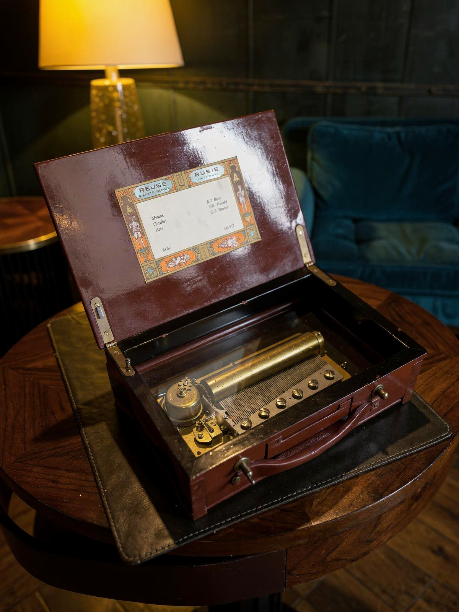

Reuge Müzik Kutusu
Ses & Müzik
← Koleksiyona dönAhşabın içinde saklanan değil, camın altında izlenebilen bir melodi.
Bu Reuge müzik kutusunda müzik, yalnız duyulan değil, mekanizması izlenebilen bir deneyim. Ahşap kasanın içindeki silindir ve tarak düzeni camın altında görünür kalıyor. Reuge’ün hikâyesi, Charles Reuge’ün 1865’te İsviçre’nin Sainte-Croix kasabasında açtığı atölyeye ve müzikli cep saatlerine uzanıyor. Kapak etiketindeki Minuet, Gavotte ve Aria adları ile Bach ve Händel atıfları repertuvara dair zarif ayrıntılar sunuyor. Parça, müziği bir dosyadan değil, düzenlenmiş mekanik hareketten dinleme fikrini taşıyor.